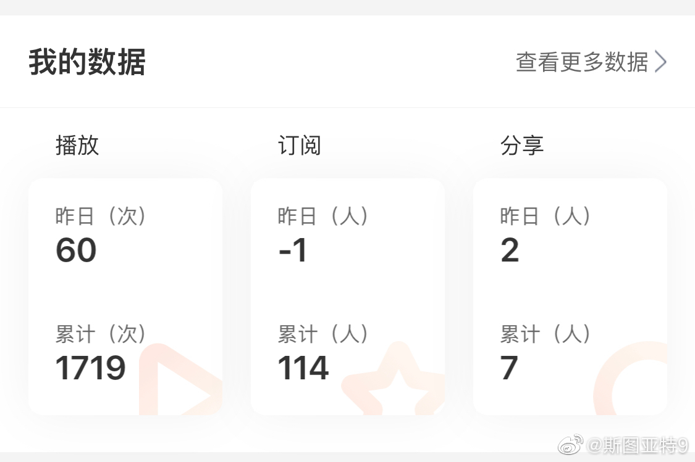

看了一下新闻。美国棒球联赛的决赛竟然打了个4:3，然后七场都是客场作战的球队获胜了。这也太不可思议了。

斯图亚特9
2019-10-31
斯图亚特9
2019-10-31
我们的播客节目《牛油果烤面包》讲激光雷达的下半集上线了！大家知道激光雷达是无人车的关键技术。这方面的专家孙杰会讲一讲技术挑战在哪里，还介绍了国内的发展水平如何。海外的朋友可以使用苹果podcast, 谷歌podcast和多数其他播客平台。搜索节目名称就可以了。国内外的朋友都可以去喜马拉雅：  第八集 激光雷达：智能驾驶的关键技术（下） 欢迎收听和订阅！
第八集 激光雷达：智能驾驶的关键技术（下） 欢迎收听和订阅！
斯图亚特9
2019-10-31
这数字也太让人忧伤了。订阅数不增反减……
- 
斯图亚特9
2019-10-31
今天猛然发现，Gmail + Google Drive的免费15 GB已经用到14 GB了。经过一番努力搬运，终于把空间降到了11GB，同时把微软Onedrive的5 GB空间用到了4 GB （就是在这个过程中看到了OneDrive里留下的过去live space的照片，好奇去博客看一眼发现网易博客关掉了……）
（就是在这个过程中看到了OneDrive里留下的过去live space的照片，好奇去博客看一眼发现网易博客关掉了……）